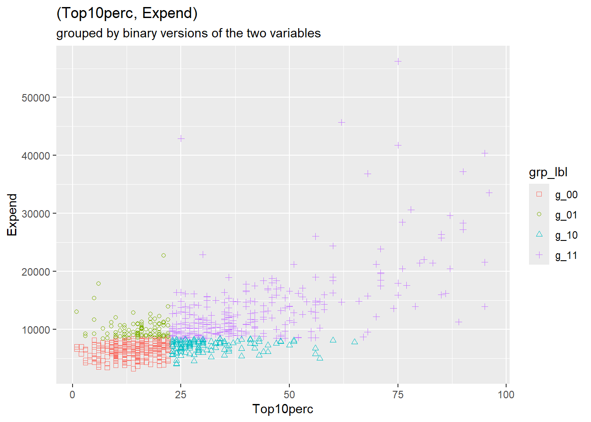
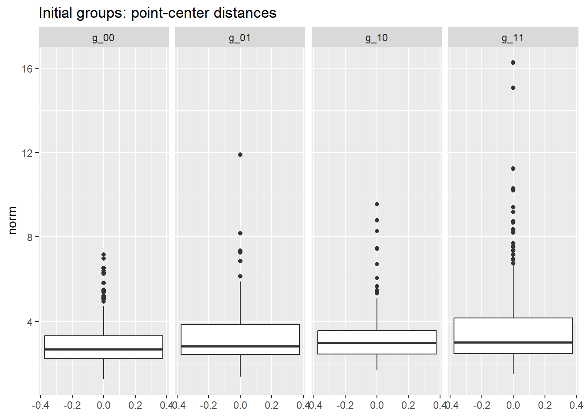
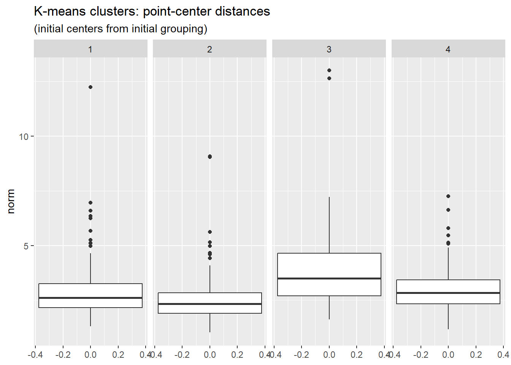
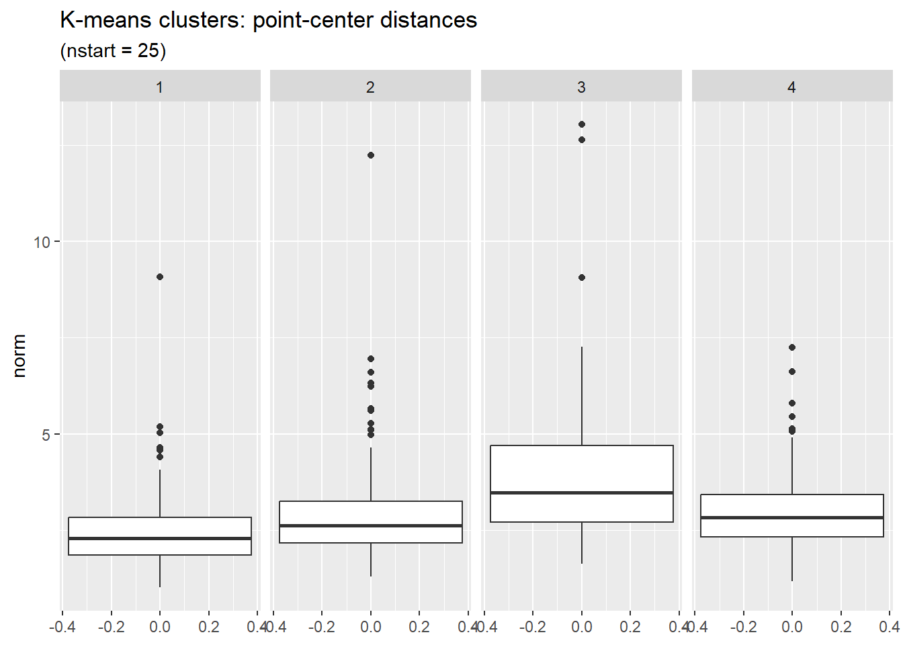

| variable | description |
|---|---|
| college_name | Name of the college or university |
| Private | No or Yes indicating private or public |
| Apps | Number of applications received |
| Accept | Number of applications accepted |
| Enroll | Number of new students enrolled |
| Top10perc | Pct. new students from top 10% of H.S. class |
| Top25perc | Pct. new students from top 25% of H.S. class |
| F.Undergrad | Number of fulltime undergraduates |
| P.Undergrad | Number of parttime undergraduates |
| Outstate | Out-of-state tuition |
| Room.Board | Room and board costs |
| Books | Estimated book costs |
| Personal | Estimated personal spending |
| PhD | Pct. of faculty with PhD’s |
| Terminal | Pct. of faculty with terminal degree |
| S.F.Ratio | Student/faculty ratio |
| perc.alumni | Pct. alumni who donate |
| Expend | Instructional expenditure per student |
| Grad.Rate | Graduation rate |
Clustering: EDA in Higher Dimensions
Part 1, session 2a of Data Mining Intro
Abstract
Introduce statistical clustering methods.
Initial Remarks
In the context of machine learning, “unsupervised learning” encompasses algorithms designed to seek patterns in data, with minimal required guidance from the user, and without the benefit of a response variable (or a set of observation “labels”) to be approximated by functions of predictor variables. Most but not all of these algorithms are designed for high-dimensional data, that is, data with many variables (columns).
This approach is in the spirit of exploratory data analysis (EDA), which is practically forced upon us when we come across a new data set (and can remain essential throughout the life-cycle of a project). On the one hand, EDA has no sharp measures of success that we are driven to optimize, so one might say that we’re strolling through the data, taking in the scenery. On the other hand, we are looking for unanticipated patterns in the data, and therefore it is useful to record just what patterns we do anticipate, conjecture, or wonder about.
In our previous sessions we have reviewed some ways of looking at one or two variables at a time. When we are presented with a new data set having many variables, it is useful to simplify the data in some way to help us form a first impression.
One way is to look for a few functions of the many variables that somehow carry much of the original information. The prime method for doing so is principal component analysis (PCA), where the functions are linear and capture much of the variation in the data. We’ll come back to PCA in subsequent sessions.
In this session we’ll discuss another way to simplify the data, namely, to group observations having similar profiles (patterns in the values of the variables). Such clustering methods are currently of great interest in both science and industry, giving rise to a number of new clustering methods.
US Colleges
To illustrate ideas we’ll use data about US universities and colleges from 1995, described in the book, An Introduction to Statistical Learning with applications in R (ISLR). The data are recorded within the R package ISLR2 as ISLR2::College. From the R command help("College") we see that the data consist of 777 observations (data rows), and obtain the following description of the variables (data columns).
Class Exercise
Team up with a classmate and make your own copy of the ISLR2::College data. Record your questions and conjectures about the data. Which of these could be addressed by the set of data variables? Take 15 minutes to prepare to report out to the class.
Grouping Variables
Clustering algorithms construct groups of observations based solely on statistical information obtained from a given data set, with no reliance on the meaning or importance of the data variables.
A complementary way to form groups is to use so-called “grouping variables” that we select or construct from the data. Often, the grouping variables are evident from the questions we’re trying to answer, e.g., to compare spending patterns among different socio-economic groups.
When we want to construct groups (clusters) of observations as a means of exploring the data, we should consider what would make one grouping (clustering) more or less effective than another for this purpose. We’ll return to this point.
Example: college data grouping variables
To help us consider the goals and criteria of clustering (grouping), let’s return to the US college data and choose a few variables with which to group the data.
Consider the distinction between more expensive versus less expensive schools as indicated by variable Expend (instructional expenditure per student). We might ask, “Are the more expensive schools able to attract more of the top students?” So let’s also use the variable Top10perc (percent of new students coming from the top 10% of their high school class). We’ll simply split each variable at its median value, creating two binary variables, which we’ll use as our grouping variables.
Before proceeding, let’s examine the distribution of these variables via density estimates and a scatter plot.
We see that Top10perc and Expend are positively correlated, and have relatively few departures from a monotonic relationship. Also note that Expend is measured (in US dollars) on a very different scale from Top10perc.
Now let’s look at the two variables more closely, one at a time.
The figures above show decent variation on either side of the median value. Therefore cutting each variable at its median value seems reasonable, as long as we bear in mind that each distribution has a right tail (a quite long tail for Expend).
For each of the variables shown we create a binary variable having two levels, “lwr” and “upr”, meaning an observation is either below the median value, or else is no less than the median value. We then form 4 groups, each a combination of levels of the 2 binary variables, which we label \(g_{00}, g_{01}, g_{10}, g_{11}\) to denote the binary factors based on Top10perc, and Expend (in that order), with {“lwr”, “upr”} coded as {0, 1}.
To check this grouping of the data let’s first select the variables from which we defined the 4 groups and examine the scatter diagram, now using the color and shape of each data point to distinguish the different groups.

The figure above confirms that we have constructed the binary grouping variables as we intended.
The table below shows the mean per group of the underlying grouping variables.
Note: we’ve calculated the mean per group of all the numeric variables. We’ll return to those calculations in the next section.
| group | # obs | Top10perc | Expend |
|---|---|---|---|
| g_00 | 264 | 14.0 | 6371.7 |
| g_01 | 102 | 15.3 | 10081.8 |
| g_10 | 124 | 31.8 | 7078.1 |
| g_11 | 287 | 42.6 | 13650.9 |
Measures of clustering effectiveness
In the context of clustering algorithms, groups are not given but are rather to be calculated from the data. But under what criteria? Broadly speaking we want the points (each an observation of several numeric variables) to be close together within each cluster (group), and we want the clusters to be well separated from one another.
So how well do the groups constructed above perform against these criteria? We want points within each cluster (group) to be close to one another, but how should we measure distance between points? Euclidean distance springs to mind, but there is a catch: the numeric variables are recorded on differing scales.
Standardizing variables
The following table lists the mean, standard deviation, and coefficient of variation \((cv = \frac{sd}{mean})\) per variable. The variables having the largest mean value are listed first.
| variable | mean | sd | cv |
|---|---|---|---|
| Outstate | 10440.7 | 4023.0 | 0.4 |
| Expend | 9660.2 | 5221.8 | 0.5 |
| Room.Board | 4357.5 | 1096.7 | 0.3 |
| F.Undergrad | 3699.9 | 4850.4 | 1.3 |
| Apps | 3001.6 | 3870.2 | 1.3 |
| Accept | 2018.8 | 2451.1 | 1.2 |
| Personal | 1340.6 | 677.1 | 0.5 |
| P.Undergrad | 855.3 | 1522.4 | 1.8 |
| Enroll | 780.0 | 929.2 | 1.2 |
| Books | 549.4 | 165.1 | 0.3 |
| Terminal | 79.7 | 14.7 | 0.2 |
| PhD | 72.7 | 16.3 | 0.2 |
| Grad.Rate | 65.5 | 17.2 | 0.3 |
| Top25perc | 55.8 | 19.8 | 0.4 |
| Top10perc | 27.6 | 17.6 | 0.6 |
| perc.alumni | 22.7 | 12.4 | 0.5 |
| S.F.Ratio | 14.1 | 4.0 | 0.3 |
The financial variables are measured in thousands of dollars, whereas the percentages merely range from 0 to 100. The percentages thus contribute little to the overall Euclidean distance from a point (vector of observed numeric values) to a mean vector. Consequently the percentages will have little influence on calculations of clustering effectiveness based on Euclidean distances.
This issue can be addressed in a few different ways. For now we standardize each numeric variable: subtract the overall mean of the variable (across all observations) and then divide by the corresponding standard deviation of the variable. This will make the respective scales of the variables more compatible.
Within-group distances in standard units
Having standardized the college numeric variables we now calculate Euclidean distances. That is, within each group we calculate the distance of each point to the group mean vector. This vector of point-minus-mean is referred to as “error” (more precisely, “mean deviation”) in statistical parlance. We calculate the squared Euclidean length of this vector, and sum these squared distances across all points in the group. The result is called the (within-group) sum of squared errors (SSE). Here are the calculated SSE values (and related statistics) per group.
| group | count | df | RMSE | MSE | SSE |
|---|---|---|---|---|---|
| g_00 | 264 | 247 | 3.2 | 10.1 | 2493.5 |
| g_01 | 102 | 85 | 4.0 | 16.3 | 1386.6 |
| g_10 | 124 | 107 | 3.8 | 14.6 | 1560.9 |
| g_11 | 287 | 270 | 4.3 | 18.5 | 4992.3 |
The columns of the table are as follows.
- group: the label of each group
- count: the number of observations (data rows)
- df: count minus the number of numeric values (17)
- RMSE: \(\surd{\text{MSE}}\)
- MSE: SSE / df
- SSE: sum of squared point-center distances
The RMSE (root mean squared error) is a measure of the typical length of the point-center distances within each group
The sum of SSE across groups (the “total within-group SSE”) turns out to be 10433. This value serves as a reference point for other groupings (clusterings) of observations.
K-means Clustering
We’ll start our discussion of clustering using a function in the R stats package, namely stats::kmeans(). The function requires us to specify either the desired number \(K\) of clusters (groups) of observations to be formed, or else to provide an initial set of \(K\) cluster centers. If we merely provide the desired number \(K\) of clusters, kmeans() randomly selects \(K\) data rows (observations) as the initial set of cluster centers.
Given a set of cluster centers the algorithm iteratively searches for a better set, meaning a set having a smaller “within-cluster sum of squares”. In broad terms, this is done in two steps.
- Assign: the algorithm assigns each data point to the nearest center (in Euclidean distance) thereby partitioning the data points into \(K\) clusters.
- Update: For each cluster of data points, the algorihtm calculates a new cluster center, namely, the mean vector of the data points within the cluster. This yields a new set of cluster centers.
Convergence criteria: For each cluster the algorithm adds up the (point, center) squared distances. Those \(K\) sums of squares per cluster are summed acrosss clusters to form the “total within-cluster sum of squares (WCSS)” (previously referred to as the “total within-group SSE”). In addition the algorithm records the grand mean vector, the average across the entire data set and forms a weighted sum of the squared (cluster-center, grand-mean) Euclidean distances, which is called the “between-cluster sum of squares (BCSS)”.1 The algorithm concludes the search when cluster-membership no longer changes, or when the decrease in WCSS is sufficiently small.
Results for specified inital cluster centers
We now provide the kmeans() function with cluster centers in the form of the group means calculated above.2
The resulting clusters are shown in the scatter diagrams below, where for purposes of comparison we have projected the clusters onto the grouping variables we previously adopted.
Jaccard similarity
The figure above shows that the kmeans() clusters are distinct from but similar to the groups formed above whose mean values served as initial cluster centers. Here are the number of observations belonging to each combination of \(g_{x,y}\) group and kmeans() cluster.
grp_lbl
cluster g_00 g_01 g_10 g_11
1 224 49 50 9
2 22 41 48 164
3 18 11 26 38
4 0 1 0 76The table above provides in more detail the similarities and differences between the inital (grp_lbl) and final (cluster) clusters from kmeans(). The table can be represented and summarized by Jaccard’s measure of the similarity of two finite sets, \((A, B)\), namely:
\[ \begin{align} J(A, B) &= \frac{\left| A \cap B \right|}{\left| A \cup B \right|} \end{align} \]
Letting \((A, B)\) denote the respective (row, column) of each cell in the above table, we obtain the following table of Jaccard similarity measures of each (cluster, grp_lbl) combination.
| cluster | g_00 | g_01 | g_10 | g_11 |
|---|---|---|---|---|
| 1 | 0.60 | 0.13 | 0.12 | 0.01 |
| 2 | 0.04 | 0.12 | 0.14 | 0.41 |
| 3 | 0.05 | 0.06 | 0.14 | 0.11 |
| 4 | 0.00 | 0.01 | 0.00 | 0.26 |
The weighted average (weighted by cell count) of these similarity values is 0.33.
Distribution of point-center distances
The two figures below show the range of point-center distances for the original grouping and for the kmeans() clustering. In the latter case, points are closer to the mean of the cluster, as can be seen by comparing the scale of the two figures. The total within-cluster sum of squares is 7434 for kmeans() compared to 10433 for the original grouping.


Results for random inital cluster centers
Let’s run kmeans() again, this time specifying only the desired number \(K\) of clusters. The function will then select \(K\) rows of the data at random as the initial set of cluster centers. In any case, no matter how the initial cluster centers may be selected, that selection influences the subsequent iterative formation of clusters.
To make the algorithm more robust we specify parameter nstart, the number times to run kmeans(), each using a distinct random selection of data rows as initial cluster centers. For each run the algorithm computes WCSS (the total within-cluster sum of squares). Once nstart runs have been completed, the run having the smallest value of WCSS is reported to the user. A rule of thumb is to set nstart to a value between 20 and 50.
We now run kmeans() again, setting \(K = 4\) and nstart = 25. For purposes of comparison with previous results, here is a projection of the resulting 4 clusters onto a (Top10perc, Expend) scatter diagram.
Interestingly, we again see strong separation of clusters associated with the values of Top10perc and Expend.
The table below shows the number of observations in each combination of the original grouping and the new kmeans() clusters.
grp_lbl
cluster g_00 g_01 g_10 g_11
1 21 40 47 161
2 225 50 51 11
3 18 11 26 39
4 0 1 0 76As with the previous kmeans() clusters, we again see two of the clusters well aligned with groups \(g_{00}\) and \(g_{11}\), respectively.
The similarity of the current clusters with the previous clusters prompts us to examine the number of observations in each pair (old, new) clusters, distinguishing the two as (cl_group, cl_nstart).
cl_nstart
cl_group 1 2 3 4
1 0 332 0 0
2 269 5 1 0
3 0 0 93 0
4 0 0 0 77We see that the new clusters are essentially a relabeling of the previous clusters. The figure below of new point-center distances is essentially the same as the previous figure with the first two clusters swapped. In fact the total within-cluster sum of squares is unchanged from the previous clustering.

Which value of \(K\)?
So far in our application of kmeans() to the college data we have set \(K = 4\). How would the results change with different choices for the value of \(K\)? Breaking the observations into smaller but more numerous clusters should in general reduce the total within-cluster sum of squares (WCSS), but we can also expect to reach a point of diminishing returns.
For the college data, the figure below shows how WCSS decreases as \(K\) increases.
In general, smaller values of \(K\) are more interpretable. Based on the figure above we might set \(K\) to be 4 or 5. This is a judgement call that depends on the circumstances and goals of one’s project.
Other clustering algorithms
Clustering methods are an active area of research. The K-means algorithm, first introduced in the 1930’s, has the longest history. More recent methods can be categorized along the following lines.
Soft versus Hard: “Hard” clustering assigns each data point to a single cluster. “Soft” clustering assigns to each point a finite probability distribution of cluster membership.
Agglomerative versus Divisive methods define the initial partition of the data into clusters in opposite ways. Agglomerative clustering initially defines each data point to be a cluster, and then merges clusters. Divisive clustering initially defines the entire data set to be a single cluster, and then breaks up this and subsequent clusters into smaller clusters.
Hierarchical or not: Instead of a partition, hierarchical methods create a hierarchy of parent (superset) and child (subset) clusters.
Centroid-based versus Density-based: K-means and other centroid-based methods identify a cluster of points with the mean, median, or other central measure of the points in the cluster. Density-based methods find areas having a high density of points.
Some methods of note are DBSCAN (Density Based Spatial Clustering of Applications with Noise) and HDBSCAN (a hierarchical version of DBSCAN).
Team Exercises
Iris data: Submit R command
help("iris")to learn about the measurements of iris flowers available in R asdatasets::iris. Summarise these measurements in a graph or table, for example by applying theGGally::ggpairs()function.Iris K-means: Apply the K-means algorithm to the iris measurements. How do the computed clusters compare to the grouping by variable
Species? Count the number of observations corresponding to each combination of cluster andSpecies, for example by using R functionstats::xtabs().
Resources
An Introduction to Statistical Learning by James, Witten, Hastie, & Tibshirani
Footnotes
The sum of squared (point, grand-mean) distances does not depend on any grouping (clustering) of the observations, and is called the “total sum of squares”. The between-cluster sum of squares (BCSS) equals the total sum of squares minus the within-cluster sum of squares. BCSS is also equal to a weighted sum of (cluster-center, grand-mean) squared distances.↩︎
kmeans()expects the cluster centers to be expressed as a matrix, in which each row represents a single cluster center and each column represents a “coordinate” of the cluster centers corresponding to one of the numeric variables (columns) of the data matrix.↩︎